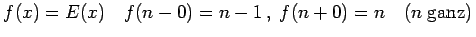

Inhalt Index DeskTop Bronstein

 Funktionen und ihre Darstellung Funktionsbegriff Stetigkeit einer Funktion
Funktionen und ihre Darstellung Funktionsbegriff Stetigkeit einer Funktion


| Beispiel A |
|
Die Kurve ist auf der linken Abbildung dargestellt:
Die Unstetigkeit ist von der Art des Punktes E. |
| Beispiel B |
|
Die Unstetigkeitsstelle ist von der Art des Punktes B. |
| Beispiel C |
|
Die Unstetigkeitsstelle ist von der Art des Punktes C, aber mit dem Unterschied, daß die Funktion f(x) im Punkt x=1 nicht definiert ist. |
Der Wert der Funktion f(x) für x=a braucht dabei nicht definiert zu sein, wie es für den Punkt G der Fall ist; er kann auch mit dem Wert f(a-0) oder f(a+0) übereinstimmen (Punkt F) oder aber sowohl von f(a-0) und f(a+0) verschieden sein (Punkt A).
| Beispiel A |
|
|
| Beispiel B |
|
. |
| Beispiel C |
|
|
Diese Unstetigkeit wird hebbar genannt, weil in dem Moment, da f(a) den Wert  zugeordnet bekommt, die Funktion f(x) für x = a wieder stetig wird. Dem Kurvenbild wird gewissermaßen ein Punkt hinzugefügt, oder der ,,abgesprungene`` Punkt D wird wieder auf die Kurve gebracht. Die verschiedenen unbestimmten Ausdrücke, die mit der Regel von L'HOSPITAL oder mit anderen Methoden untersucht werden können und endliche Grenzwerte liefern, sind Beispiele für hebbare Unstetigkeiten.
zugeordnet bekommt, die Funktion f(x) für x = a wieder stetig wird. Dem Kurvenbild wird gewissermaßen ein Punkt hinzugefügt, oder der ,,abgesprungene`` Punkt D wird wieder auf die Kurve gebracht. Die verschiedenen unbestimmten Ausdrücke, die mit der Regel von L'HOSPITAL oder mit anderen Methoden untersucht werden können und endliche Grenzwerte liefern, sind Beispiele für hebbare Unstetigkeiten.
| Beispiel |
|
; für x =0 ergibt sich der unbestimmte Ausdruck , aber ; durch die Festlegung und wird f(x) stetig. |